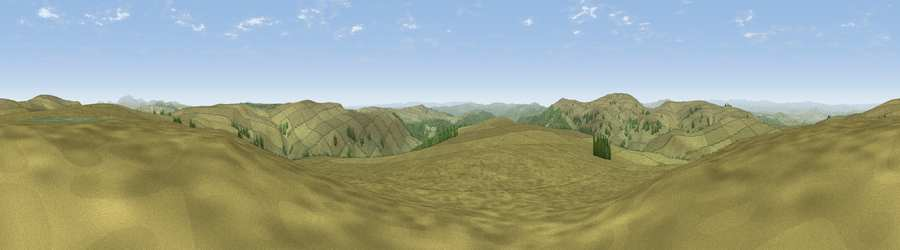

Viewpoint c12036_7343
#5883 in England · top 13% of its area beats it · —Where it is
The exact computed spot (NT 67175 01775). Click the marker for map links.
The view, rendered

A 360° render of this exact spot computed from the terrain model, tree cover and land cover — summer colours, afternoon light, calibrated against photographs of famous viewpoints. Real trees, hedges and buildings will differ in detail.
The panorama
Grey silhouette: terrain skyline in each direction (720 bearings, Earth curvature and refraction included). Dashed green: skyline with trees (+15 m) and buildings (+8 m) as obstacles. Blue strip: how far the ground is visible on each bearing.
Where the view opens
Wedge length = distance to the farthest visible ground on that bearing (vegetation-aware). Rings at 10, 25 and 50 km.
What fills the view
92% grassland · 7% woodland
Angular shares of the visible panorama (visual magnitude), not map area. Landscape diversity 0.12 (0–1 Shannon).
Key numbers
More beautiful places nearby
The staircase of upgrades: each row has a higher view potential than everything closer. Driving times are estimates from straight-line distance, calibrated against real road routing — check an actual route before setting out.
| Place | Direction | Drive | Score |
|---|---|---|---|
| Viewpoint c12068_7343 | N · 2 km | ~5 min | 73.7 |
| Carter Fell | NNE · 4 km | ~9 min | 78.3 |
| Viewpoint c12122_7374 | NNE · 5 km | ~11 min | 78.9 |
| Viewpoint c11995_7247 | WSW · 5 km | ~11 min | 82.1 |
| Viewpoint c12273_7856 | ENE · 28 km | ~45 min | 83.7 |
| Viewpoint c12396_7887 | ENE · 33 km | ~51 min | 85.7 |
| Viewpoint near Kirknewton | NE · 38 km | ~57 min | 86.1 |
| Viewpoint near Chillingham | ENE · 47 km | ~68 min | 88.1 |
55.30896, -2.51866 · source: screening · position refined by local search. Computed location — check access rights before visiting.